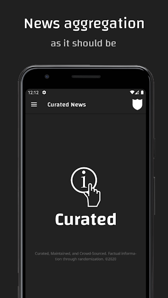
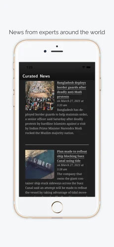

Our Platform:
Because our success is related to our statistical, privacy, and security techniques, we will not disclose the actual methodology for the Curated News platforms. We will only provide the framework behind the process as mentioned above. Our applications provide even more detail when you go to the "FAQ/Questions?" section that you will not get from this website. Whitepapers will be released in the future, detailing significant elements to our process for transparency. Give us a download on the Google Play Store, the Amazon App Store for Kindles, and the Apple Store. We are also available as a free preview on Telegram.



The Curated News Effect
"News is the primary mechanism people use to drive their daily decisions. Information quality is of the utmost importance for those who want to make high quality decisions, including consumers who want to get quality information faster. There are currently no secure news aggregators that utilize the statistical methodology Curated News employs. Furthermore, there are no platforms that serve high quality information content while simultaneously producing democratic values."
Matthew Benchimol, Founder & Developer of Curated News